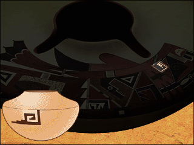

The seed jar was made in the early 1990s, about the time the internet was started in the United States. But it uses some very old designs--some from more than 600 years ago!
The MOTIFS you see here are from very old pots. The designs were passed down from mothers and grandmothers to their daughters and granddaughters.
Among the PUEBLO people these designs are like a signature for a family's pottery.
What are some things that your family has passed down from generation to generation?
What is something else that is like a signature that can be used to identify a person or group?